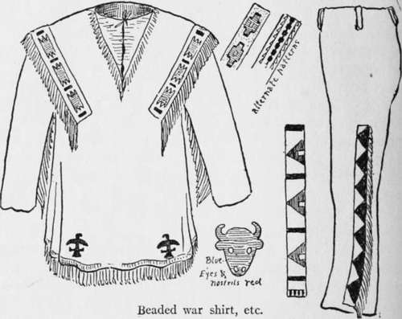
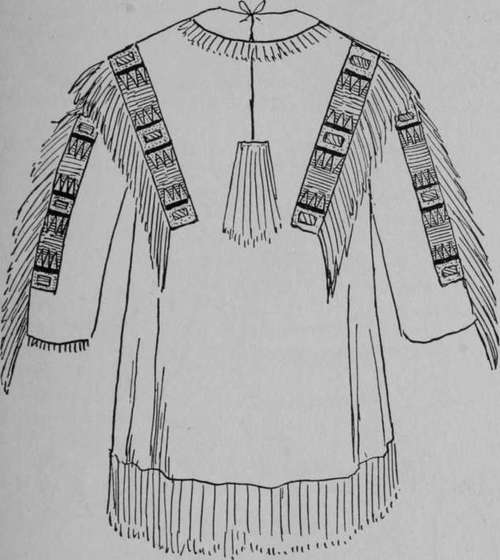
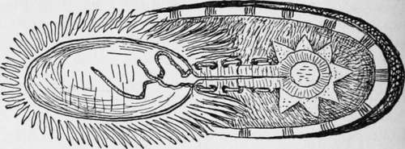
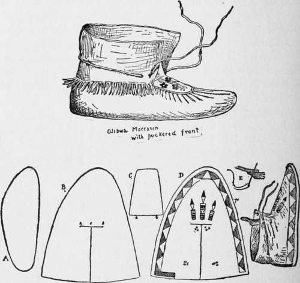
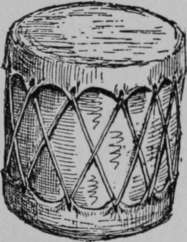
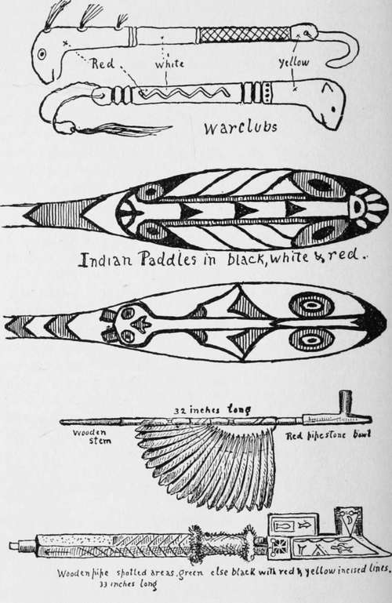

Indian Costume
Description
This section is from the book "The Book Of Woodcraft", by Ernest Thompson Seton. Also available from Amazon: The Book of Woodcraft.
Indian Costume
War shirt. Next to the Indian warbonnet, the war shirt or coat is the most effective part of the costume. This may be made out of leather, khaki, woolen stuff, or even muslin. The finest ones used to be made of tanned deer skin, but those are very expensive. Buff-tanned calf or sheep skins, such as may be got at any leather shop, are quite as good for our purpose. It takes two or even three skins to make a war shirt. Sheep costs about 60 or 70 cents a skin, and calf at least double or even three times that, so that a good strong khaki at one third the price of sheep is likely to be more popular.
The pattern for making the war shirt is much like that of a common cotton shirt, except that it has no tucks. It fits a little more closely to the body while the sleeves are loose and without wristbands. In sewing it is usual to put into each sleeve at the back of the arm a long piece of leather three or four inches wide, and this is cut into fringe afterward. The bottom of the coat also is decorated with fringe.
The oldest style of war shirt was closed at the throat with tie strings, but some of the Indians used buttons after they saw how convenient they were.
The decorations are the most Indian part of it. Two kinds are in good usage: one, embroidery of quills or beads; the other, painted figures. Fine effects can be secured in either way.
The first illustration shows a war shirt of the beaded style. These strips of beadwork are prepared on one of the beadlooms and sewn on afterward. The second is a quill-work device.
This is, of course, a mere suggestion. One may vary it in any way, though it will be found best always to use but few colors in the beads. In unskilled hands a bead pattern of two colors is better than one of four colors.
bands of beadwork may be added on the outside of each arm in front of the fringes, as well as around the outer half of each cuff at the bottom, or they may be omitted altogether and the decorations done with paint. The Indians used native paints and dyes ground up in a mixture of rosin roasted and powdered. But common painters' oil colors will do very well if thinned out with turpentine.
Quill worked war shirt.
Cotton costumes are used very often on the stage in Indian scenes; and when the ghost dance was danced in and grease. Black was made of soot taken from the bottom of a pot. Red, yellow, and white were made of clay Dakota by the Sioux, under Sitting Bull and Short Bull, nearly every one of the dancers appeared in a war shirt of painted cotton, made in some cases of old cotton flour sack.
Moccasin,-made. of arubher-soled shoe. or sneak. embroidery of sflK , red,white, blue & yellow Around the ankle a fringe of leather.
Making a Moccasin.
Magnificent examples of war shirts are now to be seen in most museums. Many also are pictured in the Reports of the Bureau of Ethnology at Washington.
Leggings
The leggings are best made as ordinary trousers, embellished with fringe and beadwork on the sides.
Moccasins are a staple article of trade; but I have found nothing better or more serviceable than a pair of ordinary rubber-soled sneaks, decorated with a few beads or a fringe.
War Clubs
The only use we have for these is in the dancing or the ceremonies. They are most easily made of wood, and should be about twenty inches long. Painted with ordinary oil colors and embellished with tufts of horsehair or feathers, they are very picturesque as well as easily made.
Paddles
The best designs I ever saw for painting paddles are those of the West Coast Indians. These are shown in three colors, black, white, and red - the red being the portions cross-lined.
Drum
While an ordinary bought drum does very well for dancing, some tribes make their own, using a section of a hollow tree (or in some cases a small barrel) covered with untanned calf skin. It is soaked till soft, scraped clear of hair, and tightly stretched over each end of the hollow log. As it dries, it shrinks and becomes very tense, giving a good drum sound. Usually it is tuned up by warming at the fire before use.
Peace Pipe
The favorite peace pipe was of the red pipe stone, but I have seen many made of wood. The two shown are in my own collection.

Continue to:
Tags
bookdome.com, books, online, free, old, antique, new, read, browse, download